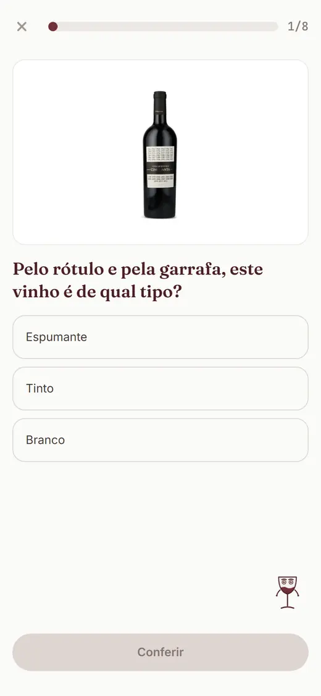
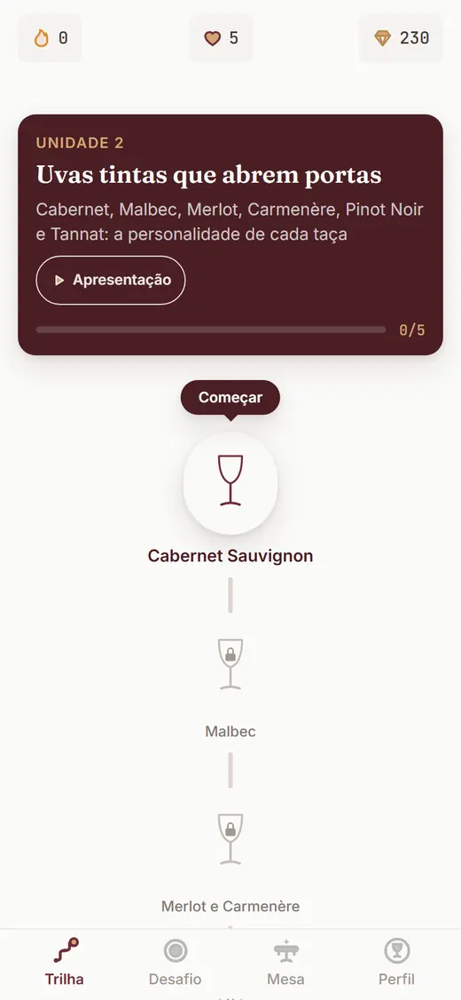

Para quem escolhe vinho no supermercado
Escolha vinho no mercado sem medo de errar.
Lições de 2 minutos com rótulos de verdade ensinam você a ler a prateleira antes de gastar. Grátis durante o beta.
Começar o treino (grátis, leva 2 minutos) Sem cartão, sem download de loja: abre no navegador do seu celular.

Exercício com rótulo real
"Um receio que tenho é de comprar vinhos que não são bons, no supermercado. Mas um vinho nesse valor é bom?"
Comentário real de quem compra vinho no mercado, anonimizado, levemente editado para leitura.
A cena você conhece
Corredor do mercado, quarenta rótulos olhando para você, e a dúvida de sempre: esse de R$45 vale o que custa? Você gira a garrafa, lê "taninos macios e final elegante", entende pouco, e sai do corredor com a mesma garrafa da semana passada. Por segurança, nunca por gosto. Foi o que ouvimos de dezenas de pessoas: "queria variar na compra dos vinhos, mas sempre que escolho diferente não agrada ao meu paladar".
Ninguém nasce sabendo ler uma prateleira. Quem acerta o vinho do churrasco aprendeu a reconhecer meia dúzia de pistas no rótulo: a uva, o país, o estilo, a faixa de preço que vale a pena. Isso se aprende. E dá para aprender treinando em casa, sem precisar comprar a garrafa errada para descobrir.
O Treine seu Paladar transforma esse aprendizado em jogo: lições de 2 minutos, com fotos de rótulos reais que você encontra no mercado brasileiro. Você responde, confere, tropeça, tenta de novo. Errar aqui faz parte do treino: o primeiro tropeço de cada lição não custa nada, e a explicação chega em uma frase de gente, sem aula chata.
Tanino, por exemplo, deixa de ser palavra de contrarrótulo: é aquela sensação de chá preto forte que seca a boca. Sabendo disso, o rótulo te avisa se o tinto é mais bravo ou mais macio.
E os cenários do treino são da sua vida, com preço de mercado de verdade: churrasco na casa do amigo com R$80, macarrão de domingo, presente de até R$100. Nada de gastronomia de revista. Você treina com as garrafas que existem na prateleira que você frequenta.
Como funciona o treino
-
Diga onde você quer acertar
No primeiro minuto, você escolhe seu objetivo: mercado, restaurante, receber em casa. A trilha se organiza para ele.
-
Treine 2 minutos por dia
Uma lição por dia basta. Perguntas curtas, rótulos reais, explicação em uma frase. Cabe na fila do café.
-
Veja a prateleira encolher
A cada acerto, seu Score de Paladar sobe. Aos poucos você bate o olho na gôndola e já sabe por onde começar.
Prova honesta, em números do produto
Contamos só o que existe no app hoje. Sem estrela inventada, sem contagem de gente que não existe: estamos em beta, e o beta é grátis.
- 30
- lições na trilha, com fatos verificados um a um
- 12 mil+
- vinhos catalogados; 10 mil e tantos alimentam o treino
- 5 mil+
- rótulos fotografados, dos que você acha no Brasil
- 2 min
- por lição. O resto do dia continua seu
O treino, do jeito que ele aparece na sua tela


A prateleira não precisa ser uma roleta.
Comece hoje. Em poucas semanas, a pergunta deixa de ser "será que esse é bom?" e passa a ser "qual desses combina com o meu domingo?". Que tal experimentar?
Começar o treino (grátis, leva 2 minutos)